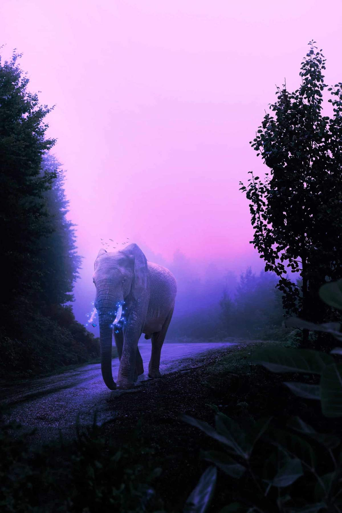
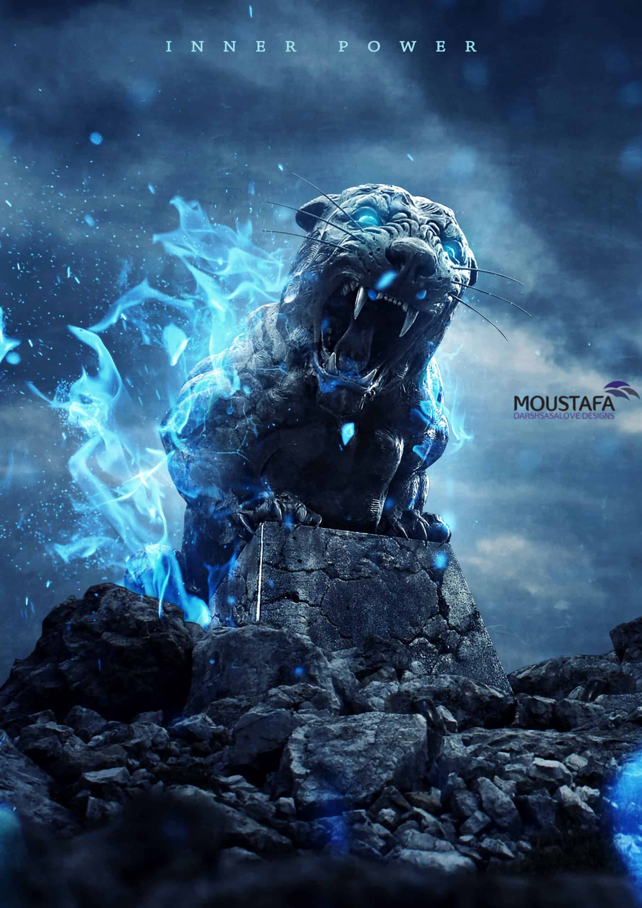

Biruk Tesfaye Ayalew
Blog
Here are some links to a website that can help you start learning photoshop right away
How to create a Mystical Glowing Elephant in Photoshop

But perhaps the most important lesson I learned is that there are no walls between humans and the elephants except those we put up ourselves and that until we allow not only elephants but all living creatures their place in the sun, we can never be whole ourselves. In This Photoshop Tutorial,you will learn how to create a night scene with a glowing effect. For Final Adjustment, we will use Camera Raw Filter.
How to Create an Intense Composite of a Stone Tiger with Blue Flames

In this tutorial,you will learn how to create a fantasy photo-manipulation using basic adjustments and some stocks and how to add some textures and make it look like a fantasy fire and you will learn how to use the clipping mask and the mask as a professional and play with the lights.
Create an Illusory World with Abstract Composition in Photoshop
The world is rapidly changing. So maybe you also want to change it up a bit? I invite you to dive into the world of amazing and surreal photo manipulation “Inception”. This work shows a piece of the digital world. Possible future world. You will learn how to create an abstract composition, interesting techniques and effects, working with a variety of instruments and much more! This tutorial will help you improve your skills and open your creative vision!
At the beginning of this work is all quite simple, work with color, and places of the model. The model must be added at the beginning, because it is the central object. Adding a city and imposing on it effects. In part with cubes you will need a little patience, because you will do a lot to transform them. In the final steps we will add effects and a little paint. You need attentiveness, diligence and good humor as possible, any version of Photoshop.
Connect with me


Follow Adobe Photoshop on twitter